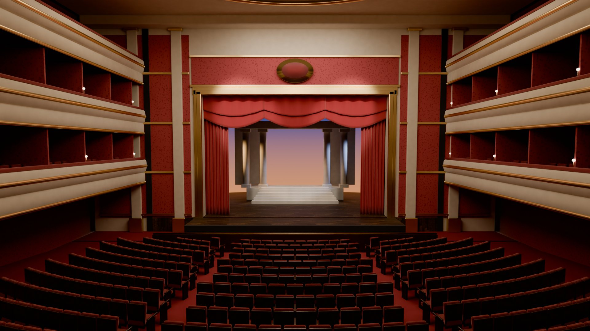
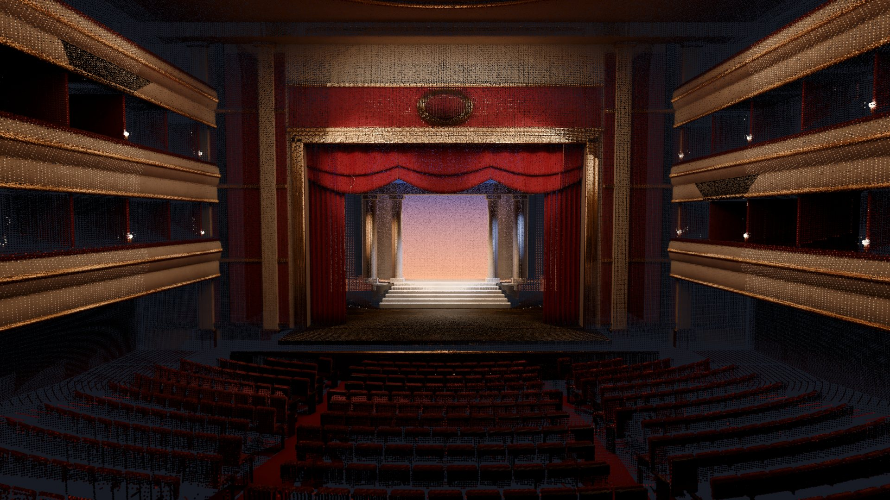
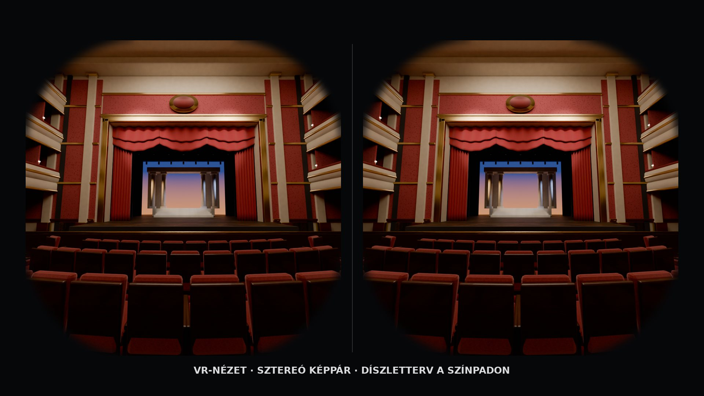

Fotószerű nézet PontfelhőDigitálisan rögzítjük a teret, és a célhoz illő formában adjuk át: interaktív bejárás, 360°-os tartalom, látványos videó vagy tervezésre kész 3D modell.
Egyetlen átgondolt felmérésből olyan digitális anyag készül, amely a marketingben, az értékesítésben és a tervezésben is hasznos, és ahol szükséges, később műszaki alapként is szolgál.
Több és változatosabb látványtartalom a digitális csatornákra.
A vendég, a látogató vagy az ügyfél távolról is felfedezheti a helyszínt.
A helyszín könnyebben bemutatható és előre megérthető.
A tervező a digitális térből indulhat ki, utazás nélkül.
Dokumentáció, felújítás, BIM, a megfelelő felméréssel és kimenettel.
Minden felmérést a felhasználási célhoz tervezünk: a marketingcélú túrához más kell, mint egy BIM-alapú felújításhoz.
A pontfelhő, a mesh, a 3D modell és a BIM más-más célra való. Itt ugyanazt a színháztermet mutatjuk meg ugyanabból a nézőpontból, ötféle formában.
A szolgáltatásokat aszerint válogattuk, mire van valóban szüksége az adott területnek. Zöld jelöli a legjobban illő megoldásokat, borostyán a kiegészítő értéket.
Egy panorámapontokból felépülő virtuális túra és egy szabadon bejárható pontfelhő. Ilyen formában kapja meg az ügyfél is: böngészőben, telepítés nélkül.
Húzással körbenézhet, a sárgaréz pontokra kattintva továbbléphet. Ez a 360°-os panorámakép és a Street View-szerű túra.
Forgatás, nagyítás, előre beállított nézőpontok és automatikus végigrepülés. A színezés valós színről magasság szerintire váltható.
A 3D modellből renderelt, előre megtervezett kameraút: a helyszín és a tervezett elrendezés egyetlen filmben.

KoncepcióvizualizációUgyanaz a digitális tér VR-szemüvegben: a díszlet- vagy rendezvényterv már a megvalósítás előtt bejárható.
Minden szolgáltatásnál röviden: mi ez, mire használható, és miben különbözik a hasonlóktól. A színes címkék jelzik, melyik területnek ajánljuk.
A besorolás azt mutatja, mennyire közvetlenül támogatja egy szolgáltatás az adott terület fő céljait. Azt nem, hogy technikailag elkészíthető-e.
Nem csomagot adunk el, hanem a helyszínhez és a célhoz illő kimeneteket ajánlunk. Egy rövid egyeztetés után személyre szabott javaslatot küldünk.
Megbeszéljük, milyen tereket rögzítenénk, és mire használná az eredményt: marketingre, ügyfélélményre, tervezésre vagy műszaki munkára.
Javaslatot teszünk a kimenetekre, a formátumokra és a felmérés módjára, és őszintén jelezzük a korlátaikat is.
Elvégezzük a rögzítést és a feldolgozást, majd átadjuk a kész digitális anyagot, a weboldalba illeszthető formában is.